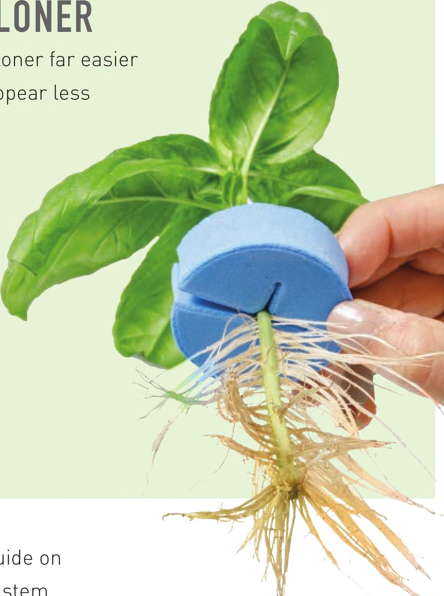

1 2 3 4 5 ROOTING CUTTINGS IN A HYDROPONIC CLONER Most hydroponic gardeners find rooting cuttings in a hydroponic doner far easier than rooting cuttings in stone wool. The plants often root faster, appear less stressed during the rooting process, and rarely require a rooting hormone. There are a few variations within hydroponic cloners, including aeroponic and deep-water culture options. This book describes how to build an aeroponic cloner that could be used in the following process. To show another option, this tutorial uses a deep-water culture hydroponic cloner. Hydroponic cloners do not need to be limited to starting plants. They often can grow plants to full maturity. I've grown strawberry bushes full of berries and monstrous mint plants in hydroponic cloners. A hydroponic cloner is a great addition to a hydroponic garden or it can be the hydroponic garden. Si With sharp pruners, collect cuttings (see the Collecting Cuttings guide on page 141 ). The cutting should be long enough to have at least 1 " of stem submerged in the nutrient solution. I generally aim for 6" cuttings so I can have a couple of inches of stem submerged in the nutrient solution. Assemble the cloning system and place under the grow light if using indoors. Fill with half-strength nutrient solution or use a hydroponic fertilizer specifically for rooting cuttings (sometimes called a “clone solution”). Plug in the air pump and water pump. Use a soft collar to hold the cuttings in place. Make sure no leaves are stuck in the collar. Sharp pruners oxyCLONE 40 Site Cloning System 2' 4-bulb T5 fluorescent light Nutrient solution MATERIALS & TOOLS 146 DIY HYDROPONIC GARDENS
